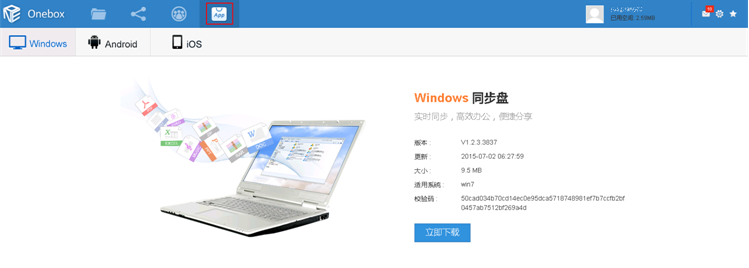
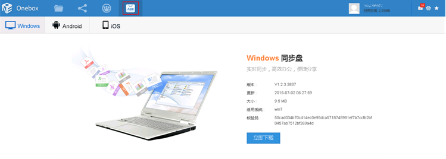

如何安装StorBox同步盘客户端
<<返回帮助中心为了充分利用StorBox，建议您在所有电脑上都安装StorBox同步盘客户端。安装完成后，初次使用时，系统默认在电脑中创建一个名称为“Onebox”的同步文件夹，您可以修改同步文件夹的名称和位置。将文件放入同步文件夹后，系统将会自动上传文件到云端，方便您在所有电脑和移动终端上访问。

为了充分利用StorBox，建议您在所有电脑上都安装StorBox同步盘客户端。安装完成后，初次使用时，系统默认在电脑中创建一个名称为“Onebox”的同步文件夹，您可以修改同步文件夹的名称和位置。将文件放入同步文件夹后，系统将会自动上传文件到云端，方便您在所有电脑和移动终端上访问。
